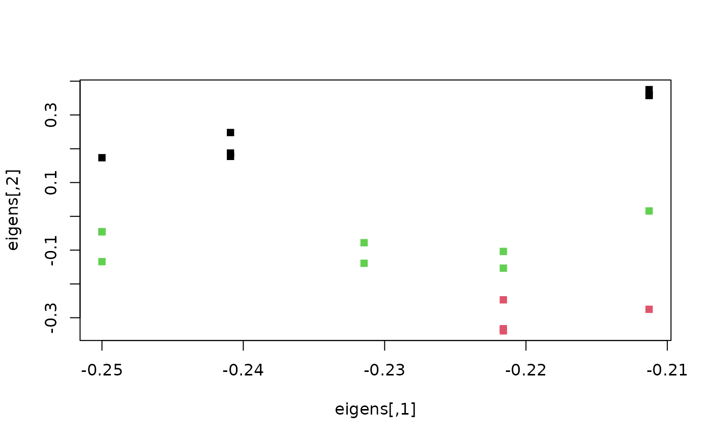

Spectral clustering emphasizes nearest neighbours when forming clusters; it avoids some of the issues that arise from clustering around means / medoids.
SpectralEigens(D, nn = 10L, nEig = 2L)
SpectralClustering(D, nn = 10L, nEig = 2L)Arguments
- D
Square matrix or
distobject containing Euclidean distances between data points.- nn
Integer specifying number of nearest neighbours to consider
- nEig
Integer specifying number of eigenvectors to retain.
Value
SpectralEigens() returns spectral eigenvalues that can then be
clustered using a method of choice.
See also
Other tree space functions:
MSTSegments(),
MapTrees(),
MappingQuality(),
median.multiPhylo()
Examples
library('TreeTools', quietly = TRUE, warn.conflict = FALSE)
trees <- as.phylo(0:18, nTip = 8)
distances <- ClusteringInfoDistance(trees)
eigens <- SpectralEigens(distances)
# Perform clustering:
clusts <- kmeans(dist(eigens), centers = 3)
plot(eigens, pch = 15, col = clusts$cluster)

plot(cmdscale(distances), pch = 15, col = clusts$cluster)